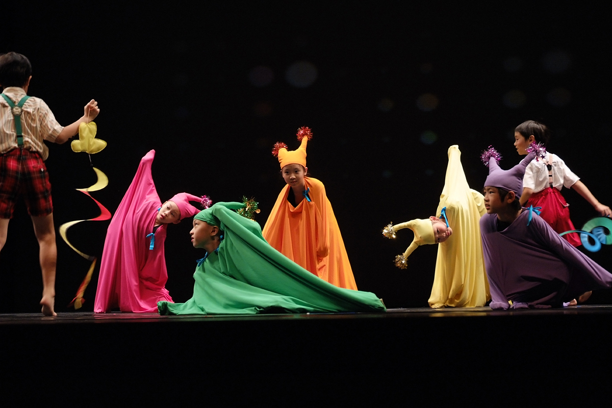
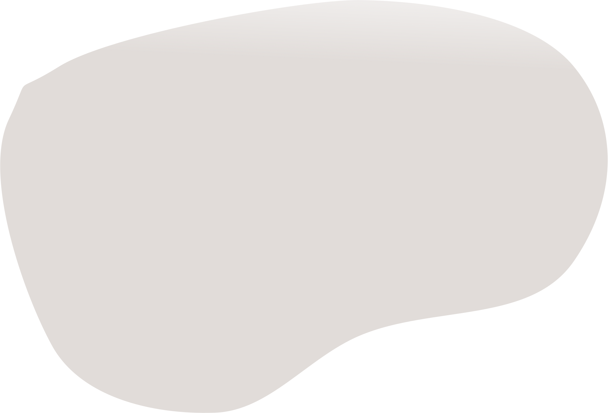
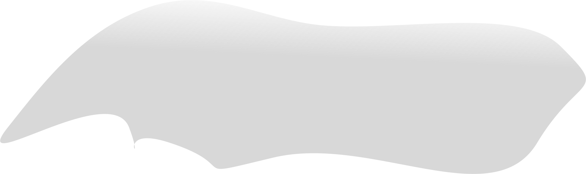

First slide label
sone representative placeholder content for the first slide.

Second slide label
sone representative placeholder content for the second slide.
Thrid slide label
sone representative placeholder content for the third slide.

Fourth slide label
sone representative placeholder content for the fourth slide.
達克羅士音樂節奏教學法(Dalcroze Eurhythmics)
Solfège
「音感訓練」
Eurhythmics
「音樂節奏律動」
Improvisation
「即興」
Plastique Animée
「聞樂起舞」

謝鴻鳴
1987 美國賓州州立West Chester University 鋼琴伴奏學碩士 1993 紐約達克羅士音樂院Dalcroze School of Music, New York 達克羅士國際教師License文憑 清華大學音樂學系兼任副教授 社團法人台灣國際達克羅士音樂節奏研究學會現任理事長暨教學總監 教育部【十二年國民基本教育生活課程綱要研修小組】委員 台北市立大學音樂系所及東吳大學音樂系所兼任副教授
目前分別有6位學員自Longy榮獲Dalcroze Certificate及License, 有4位學生在瑞士達克羅士總院深造結業，並有兩位門生青出於藍更勝藍榮獲最高階diplôme supérieur暨候選人。
理事長介紹
課程介紹
兒童班
師資班
樂齡班
